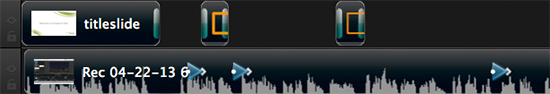

Lock or unlock media tracks
Lock or unlock media tracks
Lock a track to prevent editing or other changes from being made. A media track is unlocked by default.
Lock a track to prevent editing or other changes from being made. A media track is unlocked by default.
Click the lock icon to the left of an unlocked track. The icon turns blue and a striped overlay spans the length of the track to indicate the track is locked.
Click the lock icon to the left of a locked track. The icon turns gray and the striped overlay disappears to indicate the track is unlocked.

You can also lock or unlock tracks using the context menus. Control-click the track and select Lock Track or Unlock Track.